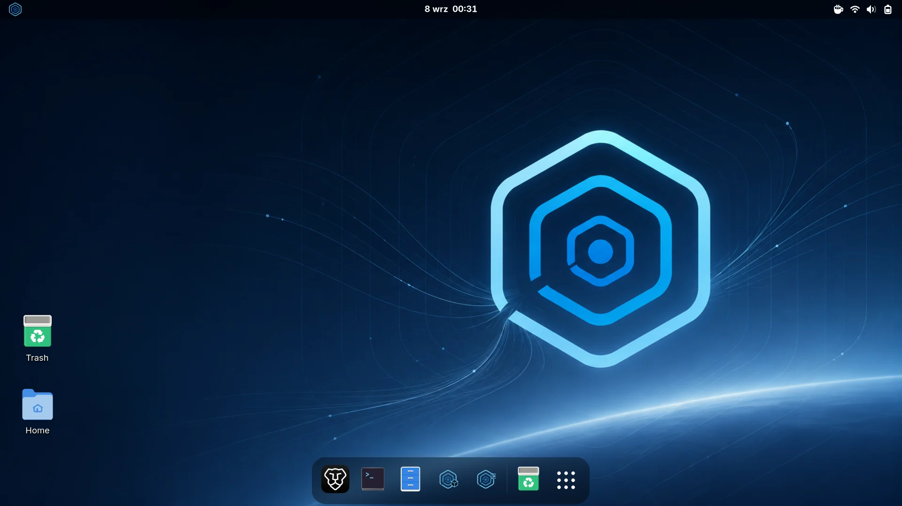
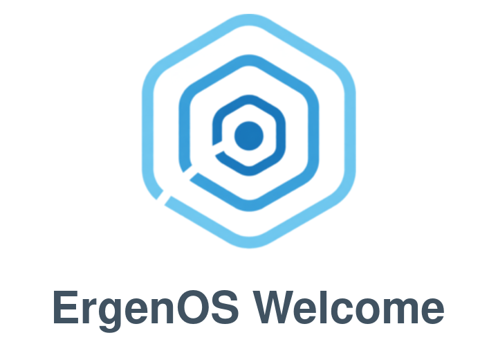
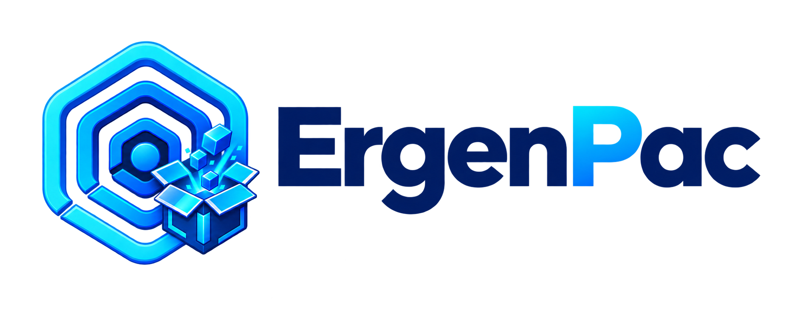
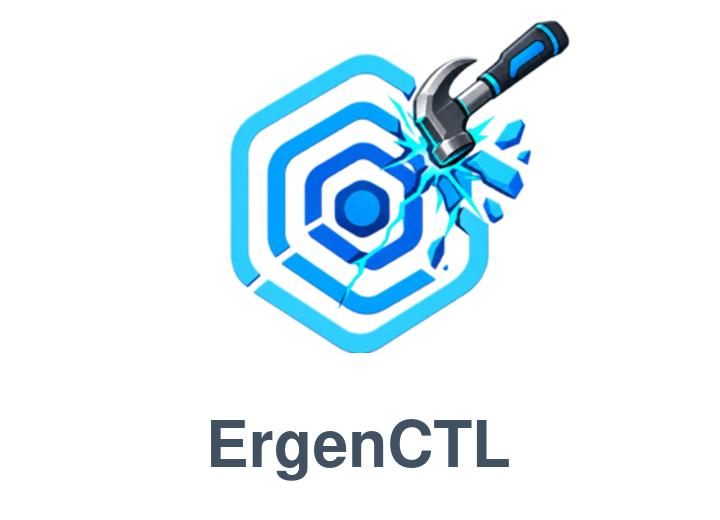

Recover with confidence
Automatic Btrfs snapshots surround package transactions. If an update goes wrong, boot an earlier system state from GRUB.
An approachable Arch Linux based desktop with built-in recovery, graphical software management and a polished GNOME experience.
Free and open source · GNOME · x86_64

View full sizeErgenOS keeps the flexibility of a rolling system while making installation, updates and recovery easier to understand.
Automatic Btrfs snapshots surround package transactions. If an update goes wrong, boot an earlier system state from GRUB.
ErgenPac brings Arch repositories, optional Chaotic-AUR sources and Flathub together in one focused application.
A guided welcome, sensible defaults and a graphical installer get you from the live USB to your own desktop quickly.
Snapper, snap-pac and grub-btrfs work together to make system snapshots a normal part of using ErgenOS, not an emergency afterthought.

Your starting point after installation, with system information and shortcuts to essential tools.
View on GitHub →
Search, install, remove and update software from Arch Linux and Flathub without living in a terminal.
View on GitHub →
Diagnose the installation, inspect boot logs, check snapshots and plan safe repairs.
View on GitHub →ErgenOS 1.0 running on physical hardware, with the system tools included in every installation.
A modern 64-bit PC with UEFI firmware is enough to get started.
Any modern 64-bit Intel or AMD processor.
A fresh ErgenOS desktop uses approximately 1.6 GB after login.
Leave additional free space for applications and Btrfs snapshots.
ErgenOS 1.0 is designed for installation in UEFI mode.
Secure Boot: manual setup using the ArchWiki procedure is currently required. Broader built-in support is planned.
NVIDIA: proprietary drivers are currently installed and configured in the same way as on Arch Linux. Installer-assisted setup is planned for a future release.
Get the verified ErgenOS 1.0 image.
Write the image with Rufus, Etcher or your preferred tool.
Start from USB and follow the graphical Calamares installer.
ErgenOS is an independent Arch Linux based desktop distribution built around GNOME, graphical system tools and practical Btrfs recovery.
Not yet. Gaming-oriented features are part of the long-term direction, but ErgenOS 1.0 is a general-purpose desktop system.
Arch packages come from the standard Arch repositories. ErgenOS applications are distributed through the signed ErgenOS repository and handled by Pacman or ErgenPac.
Yes. During installation you can stay with official repositories or configure yay, paru or Chaotic-AUR.
ErgenOS 1.0 does not configure Secure Boot automatically. Advanced users can set it up manually using the ArchWiki procedure; broader built-in support is planned.
{kind=link}
{kind=link}
{kind=link}